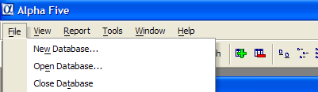
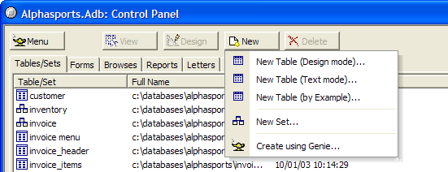
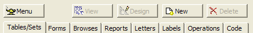
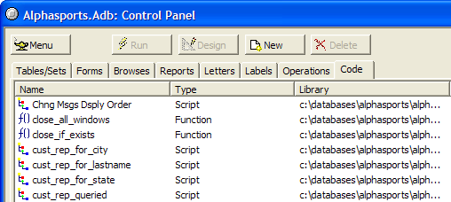
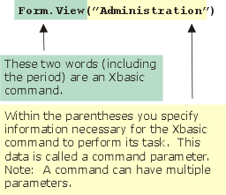
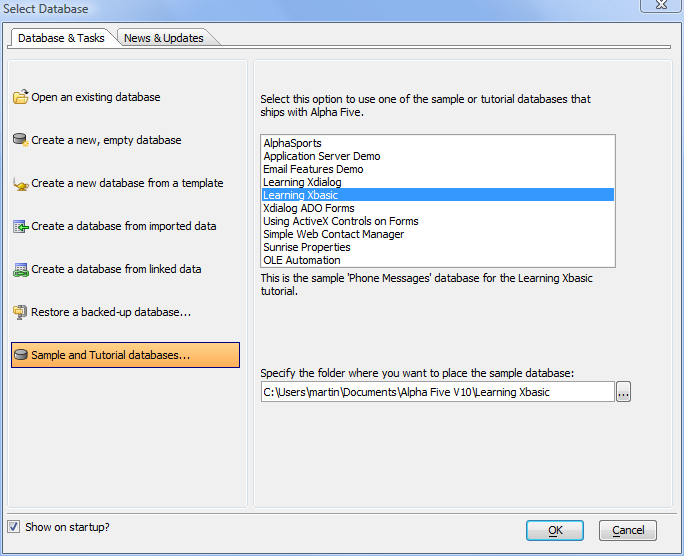
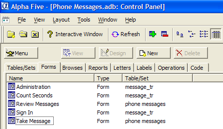
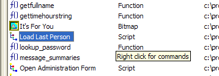
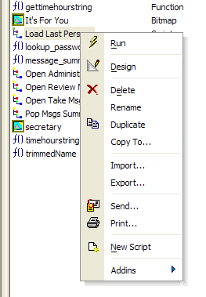
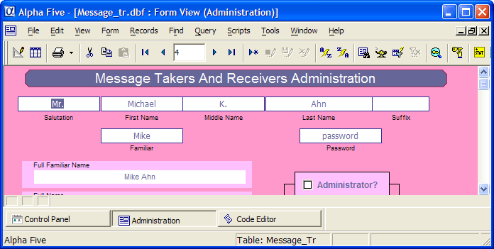

What is Xbasic?
You should already be familiar with Alpha Five menus, commands, and database creation and use. For example, to create a new database you could select the File > New Database command from the Alpha Five Main Menu.

Figure 1
|
Programming concepts deal with the terminology and definitions that you should understand in order to get the most out of programming. In the next section, well introduce you to variables, storage, commands, functions, expressions, scripts, objects, events, and programmatic flow control. But, relax, Xbasic makes all this stuff powerfully easy! |
When you display the Tables/Sets tab, and then the New command, Alpha Five presents you with three options. You can create a New Table or a New Set using the respective commands or you can create a table or set by using the Genie. If you choose to create a table directly, Alpha Five will immediately display the Table Editor where you can define the name, type, width, and other characteristics of your tables data fields. On the other hand, if you chose the Create using Genie command (see Figure 2), Alpha Five will ask you what kind of table you want to create and it will automatically define a table structure for you (which you can then modify) in the Table Editor.

Figure 2
|
Code is a name for programming commands. All computers perform tasks according to the instructions that they are told to perform. You create the instructions using a computer language. The language of computer instructions of Alpha Five is called Xbasic. Xbasic is made up of commands (words) that direct the computer to perform certain actions. There are certain rules (syntax) you must follow when you specify the Xbasic commands you want the computer to process. When you create a file or set of Xbasic commands we call that file an Alpha Five script. The name script is related to a movie script. Just as a movie script tells the actors what to say and do, an Alpha Five script contains Xbasic commands that tell the computer what you want it to do. |
Once a table is defined, you can use the other choices on the Alpha Five Control Panel (see Figure 3). You can create Forms and Browses to use for viewing, entering, and modifying your data. You can design Reports, Letters, or Labels to use in reviewing, displaying, and printing your data. And you can define an Operation to manipulate, transfer, search, and summarize your data. Finally, you can create Code or programming commands. The code you create is stored in text files that are called scripts. A script (which contains a sequence of Xbasic commands) can be re-used or run. When Alpha Five runs a script, it performs all the Xbasic commands that are in the script.

|
The Code Library is a repository where you can locate scripts or portions of scripts that are useful across different database applications. This allows you to easily re-use scripts without having to recreate them. |
A script is a text file containing valid (syntactically correct) Xbasic commands that Alpha Five processes and executes. When you create a new script in the Control Panel, Code section, you will give the script a name (i.e., the text file that contains the Xbasic commands is named just like any other file on your computer). Alpha Five scripts are stored and associated with the currently active database. However, Alpha Five contains a special area called the Code Library that lets you easily share script files among different databases.

Figure 4. The Code tab shows other types of files besides scripts. functions (a special type of script) are listed here as well as Custom menus, toolbars, and graphic image files.
For example, if you open the Control Panel Code tab panel for the "Phone Messages" (or "Learning Xbasic") sample database application, you will see the names of all the scripts created for use in the application. The first script is named Chng Msgs Dsply Order (which stands for Change Messages Display Order) as shown in Figure 4 above. When you ask Alpha Five to perform the commands in a script, you specify the script name.
Some scripts are already named in Alpha Five. There are special scripts in Alpha Five called events. Events are files containing Xbasic commands (you will learn more about events a little later), just like scripts, but they are already named and associated with specific Alpha Five components.
|
Events are pre-named Alpha Five scripts. You define what Xbasic commands are executed when an event is triggered, but events are already built-in (named) in Alpha Five. Events are part of Alpha Five components. For example, a button control on a form has events. One button control event is named OnPush (which is named for the event that occurs when you push that button). When you first create a control there are no Xbasic commands defined for the OnPush event. You add those commands to control what happens when that button is pushed. |

As you have learned, a script is a sequence or listing of Xbasic commands. Xbasic commands perform Alpha Five tasks. For example, here is an Xbasic command:
|
Form.View(Administration) |
If Alpha Five encounters this command in a script, it performs the action this command specifies. The first word in this command is Form which tells Alpha Five you want to do something with a form. Next comes a period and then the word View. View signifies that you want a form to be displayed or viewed on the screen. Finally, in the parentheses, you specify the name of the form that you want displayed. (This name must be enclosed in parentheses.) So, assuming that a form named Administration exists in the current database, Alpha Five will display that form on the screen. If there are more commands in the script, Alpha Five will continue with the next command.
For example, after loading the form Administration you might want to display the last record in the table. This Xbasic command will do that:
|
Administration.Fetch_Last() |
We can use these two commands together in a complete two line Xbasic script.
|
Form.View(Administration) Administration.Fetch_Last() |
If they are saved in a script named Load Last Person, then whenever we want to display the last person using the Administration form, you can run the script Load Last Person.

You can do the very same things done by the Load Last Person script in Exercise 1 using Alpha Fives menus and buttons. Its a simple matter to load the Administration form using the View button on the Control Panel and then pressing the Last button to load the last record as shown in Figure 10.
But heres the interesting part! When you click on the buttons like the Last button, Alpha Five is actually performing the same Xbasic commands that are in the Load Last Person script you examined above. When you press the Last button Alpha Five performs the Xbasic command CURRENT_FORM_NAME.Fetch_Last() (where the actual name or reference to the current form is substituted in the Xbasic command for CURRENT_FORM_NAME ).
In fact, Xbasic is such a powerful language, that most of the Alpha Five menu commands, buttons, and screens are Xbasic commands and scripts themselves. This means that the more Xbasic commands you learn, the more you can customize your applications to look, perform, and execute commands just the way you want them to.
Keep in mind that Alpha Five is running Xbasic behind the scenes when you use the built-in Alpha Five menus and commands. And, as you will see later on, Alpha Five can actually write Xbasic code for you! Action scripting consists of Alpha Five Genies that ask you what you want to accomplish and then create scripts automatically. You can modify the code to tweak it in just the way you want, but you save the time and effort of starting from scratch.
In Figure 11 you can see the choices available to you when you create a new script. In this case, we clicked on the Code Tab in the Control Panel and then clicked the New button.
When you select the New Database command, Alpha Five prompts you for a database name and then brings you to the Control Panel where you can begin to design any of the components for your new database system. Typically, you begin by designing the tables that store the data pertinent to your new database.
Exercise 1 - Opening and running an existing Xbasic script
Open the "Phone Messages" (or "Learning Xbasic") database. (If the "Learning Xbasic" sample database is not included in your list of sample databases, upgrade to the latest Alpha Five patch.) To open the database, display the Select Database screen, which comes up automatically when you start Alpha Five. If you see the News and Updates screen, switch to the Database and Tasks tab. Click on Sample and Tutorial databases..., select Learning Xbasic, press OK, and you will create a working copy of the sample database in your documents folder.

Display the Form tab in the Control Panel.
Verify that form "Administration" exists in this database as shown in figure 5.
Now display the Code tab to see existing Xbasic scripts for the Contact Manager database.
Find the script named Load Last Person.
Left-click once on the Load Last Person script name as shown in Figure 6.
Right-click on the mouse to bring up the menu shown in Figure 7.
Select the Design command. Selecting the Design command launches the Alpha Five Code Editor shown below in Figure 8.

Figure 5

Figure 6
Note the "bubble help" which appears indicating you can see more command options for working with a script by right-clicking your mouse.

Figure 7
In Step 8, you could have clicked the Design button above the tabs of the Control Panel. Or you could have chosen Design from the Script menu. Alpha Five provides multiple options for initiating many commands.
| About The Code Editor
An editor is just like a word processing program. The Alpha Five Code Editor is where you create Xbasic scripts by typing Xbasic commands on each line. The Code Editor can be directly launched in many different ways (see notes to Step 8 in the exercise). The Code Editor also loads automatically when you create scripts for Alpha Five events (more on this later). In Step 8, you opened an existing script for design or editing. This script appears on the screen in the editing window. The Code Editor has two tabs. The active (foreground) tab shows the script you are currently editing. The name of the script appears in the tab. An asterisk after the name indicates the script has been changed but those changes haven't been saved. When you create a new script, the name will be Untitled_# (where # is a number, 1, 2, etc.). You name a new script when you save it by selecting the Save or Save as commands. The other tab in Figure 8 is labeled Interactive. This is a special window where you can type and execute Xbasic commands interactively or at once line by line. Using the Interactive Window allows you to immediately test and see what Xbasic commands do. You will try this out in upcoming exercises. |
Right click on the mouse to bring up the menu shown in Figure 8.
Select the Design command.
Click the Run button
 .
.

Figure 9
The Alpha Five Window Bar shows three running windows. Clicking the buttons allows you to quickly switch windows.
Running a script means that Alpha Five runs or executes each of the commands in the script line by line. Some commands will loop back and execute certain lines a number of times before proceeding; Other commands might extend over many lines of typed text but are treated when entered correctly as one command.
When you click on Run the Administration form loads and the last record is fetched as shown below in Figure 9. The primary index for this table is by last name, so the Fetch command loads the last record by that index.
| Multi-tasking in Alpha Five
Alpha Five can run multiple tasks at the same time. In Figure 9, you see the Administration form loaded because you ran (executed) the Xbasic commands in the script that you were viewing in the Code Editor window. The Code Editor is still running and still displays the scripts you are working with. And the Control Panel window is also still running. All three of these active Alpha Five tasks are shown on the Window bar near the bottom of the screen. (The Window bar itself is turned on or off using the View drop-down menu.) If you click on any of the three buttons on the window bar, your active window will change. A depressed (figuratively speaking!) button indicates the current active (foreground) window. |
Click the Code Editor button on the Window bar to switch back to the Code Editor.
You should see the same screen as shown in Figure 8 except that the Window Bar now includes a button for the Administration form displayed by running the Xbasic commands in this script.
Next
Xbasic is the "Brains" of Alpha Five